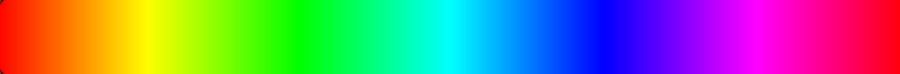
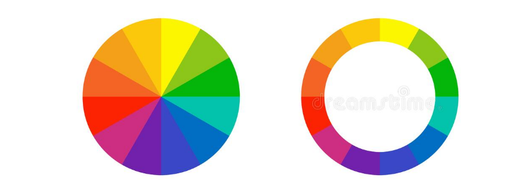

A Teoria das Cores é uma área de estudo que busca compreender a relação entre a luz e a natureza das cores bem como sua ação sobre o cérebro humano.
A cor é uma propriedade da luz e não dos objetos sobre os quais ela incide. Para comprovar esta afirmação Isaac Newton desenvolveu o experimento do prisma de vidro sobre o qual atravessava um raio de luz que se decompunha do outro lado num feixe de cores que ia do violeta ao vermelho, ele deu a esse feixe o nome de espectro das cores.
Espectro das Cores:
O espectro das cores é o mesmo que vemos no arco-íris e se compõe de uma gama de cores formada pela união de sete cores, a saber: vermelho, laranja, amarelo, verde, azul, anil e violeta.
As sete cores do espectro que vemos no arco-íris por sua vez são formadas por várias combinações das cores primárias que são: vermelho azul e amarelo. Basicamente todas as cores podem ser formadas por combinação dessas três.
Nas artes, o espectro de cores é utilizado na forma do círculo cromático desenvolvido por Goethe que é composto por um espectro de doze cores formado pela transição entre as três cores primárias.
Círculo cromático de Goethe:
A quantidade de luz refletida também pode definir se uma cor é mais escura ou mais clara, sendo o preto a ausência total de luz ou de reflexão da luz e o branco a união de todas as cores.